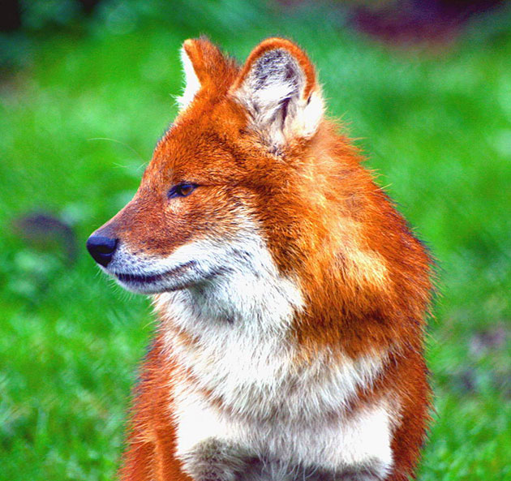

Красный волк наиболее распространен в Китае и Индии. В России он проживает возле границы с Поднебесной. Ареал его обитания непостоянен – он всегда перемещается. В прошлом веке его можно было встретить даже в горах Алтая, но под влиянием различных факторов он вынужден был покинуть эту территорию. |
 |